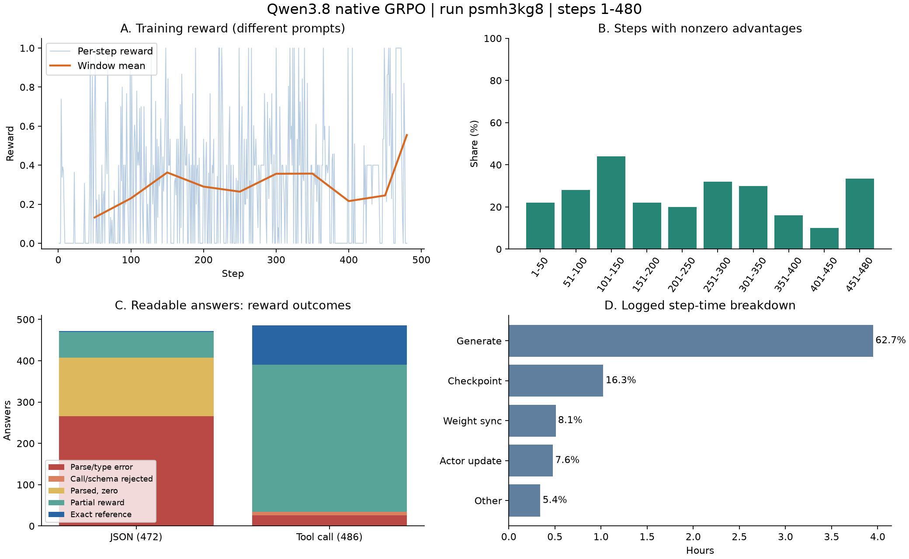

Qwen3.8 原生工具协议 GRPO：当前训练分析与改进报告
Result iteration：2026-09-15-qwen38-native-grpo-analysis
训练 run：psmh3kg8；实验名：Qwen3.8-27B-LoRA-FSDP2-MIG67G-ReferenceReward。
数据快照：2026-09-15 09:19 UTC；日志覆盖 step 1–480 / 计划 676 步（71.0%），最后进度约为 08:34 UTC。本文是当前输出的阶段分析，未发现完整训练结束记录。
1. 结论与处理优先级
本轮原生 XML 工具协议已经产生有效奖励，不能再沿用上一轮“XML 调用全部无法评分”的结论。但 JSON 提示与奖励契约冲突、开放文案逐字匹配、组内同分过多仍限制训练收益；同时最新保存产物存在可复现的完整性异常。
| 优先级 |
结论 |
下一步 |
| P0：先确认产物可恢复 |
step 480 的生成文件、checkpoint 指针及多个小文件全为零字节 |
检查训练退出与存储写入状态；验证 checkpoint 可加载后再决定恢复位置 |
| P0：修正 JSON 契约 |
106 条 <response> 包装答案全部零分，其中 57 条内部与参考完全一致 |
按任务明确允许的封装形式，统一提示、参考及解析器 |
| P1：重划奖励任务 |
JSON 正分率仅 13.8%；开放文案常因不逐字相等而零分 |
确定性字段用规则；自由文案另设语义评价或先移出规则训练 |
| P1：提高有效组比例 |
358/480 步优势全零；154 步虽有正奖励却组内同分 |
先修奖励，再做 n=2/4 对照；记录组内方差及任务级有效组比例 |
| P1：建立固定验证 |
本轮关闭训练前及周期验证 |
固定 74 条当前可用验证样本，比较基座与可加载 checkpoint |
| P2：节省运行开销 |
rollout 占计时总和 62.7%，保存 checkpoint 占 16.3% |
验证保存方案后降低频率；小规模测并发和前缀缓存 |
当前证据支持“奖励链路明显改善”，尚不支持“模型业务能力已提升”。 本次没有执行恢复、修改奖励、启动训练或评测。

图中任务结果只统计可读的 958 条回答；曲线覆盖全部 480 步。不同步对应不同样本，曲线不是固定验证集能力曲线。
2. 数据来源与复核边界
| 来源 |
对应位置与用途 |
| 训练控制台 |
logs/Qwen3.8-27B-LoRA-FSDP2-MIG67G-ReferenceReward-20260915_020721.log；连续 480 条逐步指标 |
| 本轮实际 Hydra 配置 |
outputs/2026-09-15/02-07-38/.hydra/{config,overrides}.yaml |
| 本地生成 |
logs/rollouts/Qwen3.8-27B-LoRA-FSDP2-MIG67G-ReferenceReward/{1..480}.jsonl |
| 本轮奖励与输入代码 |
/shared/users/yangyq/data/recipe_v2_qwen38_native/tf_rl/，已冻结到本报告 assets/source/tf_rl/ |
| SwanLab run 标识 |
swanlog/run-20260915_021515-psmh3kg8，从训练日志确认；本报告数值来自本地日志，未另拉取远端指标 |
| 上轮结果 |
2026-09-12 低奖励分析，run r0u5ljmm |
| 仓库基点 |
d5d24f87ff26025cec320d620150001f4b0d7a1c；工作区有本地修改，外部 recipe 不受此提交标识覆盖 |
生成目录复用了实验名，存在跨 run 覆盖风险。本次冻结了实际读取的文件，并对 step 1–479 的 每步两条分数均值与本轮日志逐步核对；958 条回答用冻结的奖励代码复算，全部在 1e-5 容差内一致。这个核对支持文件与本轮的对应关系，但源 JSONL 没有独立 run_id，因此下轮应使用 run 专属目录。
step 480 的文件长度为 57,053 bytes，全部为 NUL（0x00），不能解析。该步的日志指标可用、两条奖励均为 0；本文不推测其输出内容或任务类型。全程奖励均值用 480 步日志；逐回答归因使用前 479 步的 958 条，明确区分分母。
报告脚本及复核数据见第 10 节；原始输入可能很长，网页仅展示精简解释，完整样例保存在 JSON 中。
3. 实际运行配置
| 项目 |
实际值 |
| 模型 / 参数训练 |
/shared/models/Qwen3.8-27B；LoRA rank=32、alpha=64、all-linear |
| 算法 |
GRPO，组内标准差归一化；KL 加到 loss，系数 0.001；entropy_coeff=0 |
| batch / 采样 |
train_batch_size=1；rollout.n=2；temperature=1.0，top_p=1，top_k=-1 |
| 优化 |
lr=3e-6；ppo_epochs=1；mini/micro batch=1；grad_clip=1.0 |
| 数据 |
recipe_v2_qwen38_native/data/rule_train.parquet；shuffle=False；一轮 epoch |
| 过滤后样本 |
train=676，超长过滤 6；val=74，超长过滤 2 |
| 长度预算 |
prompt 8192；response 4096；总长 12288 |
| rollout |
vLLM async；max_num_seqs=1；前缀缓存关闭；enforce_eager=True |
| 验证 / 保存 |
val_before_train=False；test_freq=-1；save_freq=20；max_actor_ckpt_to_keep=null |
| 恢复策略 |
resume_mode=auto；必须结合产物完整性检查，不能仅看目录名 |
名称里的 MIG67G 不可当作实际硬件容量证明：日志记录的 allocated/reserved 峰值约为 77.89/83.71 GiB（指标名为 gb）。这些是内存统计高水位，也不是逐步即时用量；应以训练容器实际设备信息确认资源配置。
4. 当前训练表现
4.1 总体及分任务
| 指标 |
当前结果 |
| 日志平均 reward（480 步） |
0.290135 |
| 至少一条正奖励的步骤 |
276/480（57.5%） |
| advantage 极值非零 / pg_loss 非零 |
均为 122/480（25.4%），对应步骤一致 |
| 零优势步骤 |
358/480（74.6%） |
| 正奖励但组内同分 |
154 步；另外 204 步两条均零分 |
| 可读回答正分 / 零分 |
517/958（54.0%） / 441/958（46.0%） |
| 与参考完全一致 |
97/958（10.1%）；不等价于独立业务成功率 |
| 两次生成文本完全相同 |
66/479 组（13.8%） |
| 任务 |
回答数 |
平均 reward |
正分率 |
完全参考一致 |
非零优势组 |
| tool_call |
486 |
0.514935 |
452/486（93.0%） |
95/486（19.5%） |
109/243（44.9%） |
| JSON |
472 |
0.059897 |
65/472（13.8%） |
2/472（0.4%） |
13/236（5.5%） |
工具任务是当前奖励与有效更新的主要来源。文本相同仅占 13.8% 的组，而同分组接近 75%，因此问题不能只解释成“采样多样性不足”；大量不同回答被奖励规则映射到同一个分数。
4.2 与上一轮的区别
| 口径 |
9 月 12 日旧协议，前 221 步 |
9 月 15 日本轮，前 221 步 |
| 平均 reward |
0.012160 |
0.252404 |
| 非零 advantage 步数 |
4/221（1.8%） |
63/221（28.5%） |
这说明当前配置下已能获得更多任务奖励信号。两轮 recipe、协议和生成均有变化；未对同一固定验证输入做基座/checkpoint 配对测试，不能把此差值解释为纯训练增益。旧报告已冻结的证据应作为历史来源，不能再从共用 rollout 目录重建旧实验。
4.3 分窗口
| 步数 |
平均 reward |
非零优势步骤 |
可读回答中工具任务占比 |
| 1–50 |
0.1320 |
11/50 |
14.0% |
| 51–100 |
0.2302 |
14/50 |
50.0% |
| 101–150 |
0.3626 |
22/50 |
74.0% |
| 151–200 |
0.2901 |
11/50 |
56.0% |
| 201–250 |
0.2642 |
10/50 |
50.0% |
| 251–300 |
0.3560 |
16/50 |
70.0% |
| 301–350 |
0.3568 |
15/50 |
64.0% |
| 351–400 |
0.2159 |
8/50 |
48.0% |
| 401–450 |
0.2448 |
5/50 |
10.0% |
| 451–480 |
0.5542 |
10/30 |
86.2%（缺 step 480 输出） |
最后一个窗口奖励高，但对应任务构成变化很大，不能据此宣称收敛或能力提升。shuffle=False 放大了这种顺序效应。
5. 主要问题与证据
5.1 JSON 包装要求冲突：有确定证据，应先修
导航样本的实际输入明确要求：
严格按照指定的 JSON 格式进行输出，包裹在 <response> 标签中，严禁输出任何解释性文字或原始 Query。
奖励 parse_output(kind='json') 却对完整文本直接 strict_json，不支持该包装。第 12 步第 2 条、第 20 步第 1 条均按要求输出 <response>…</response>，内部对象与参考完全一致，最终仍为 0。
472 条 JSON 中 266 条解析失败，按输出外形拆分如下，四类互斥：
| 外形 |
数量 |
解读 |
<response> 完整包装 |
106 |
包装内全部可获正分，其中 57 条完全参考一致 |
| 以 Markdown fence 开始 |
140 |
离线确认均为完整单个代码块；剥除后只有 7 条获正分 |
| 输出工具调用 |
11 |
需要检查决策阶段与目标 kind，不能单纯放宽 JSON 解析 |
| 其他 |
9 |
需逐条检查文本/任务要求 |
离线包装对照（未部署）：仅对完整 <response> 或完整单个代码块取内部内容，保持字段评分规则不变。958 条回答均值由 0.290741 到 0.389668，正分数 517→630，有差异组 122→147/479。这个增分来自重新解释相同输出，不是模型进步。
尤其要注意：剥除 140 个代码块后，仍有 133 条无正分。仅“允许代码块”无法解决大多数剩余 JSON 奖励问题。修复时应在每类任务契约中声明输出格式，只接受完整合法包装，不任意从解释文字中截取 JSON。
5.2 合法 JSON 并不意味着应与教师文案逐字相同
141 条 JSON 已成功解析但 reward=0。其中 advices,opening_remarks 52 条、related_questions 51 条、inspiration 16 条，合计 119 条。这些字段通常包含开放内容；当前规则按叶子路径和值严格相等，合理改写也可能没有匹配项。
第 11 步第 2 条输出数组 [1,2,3,4,5,6,7,8,9,10]，参考为 {"selected_hotels":[1,2,3,4,5,6,7,8,9,10]}，同样零分；这里首先是顶层结构不同，不能一律归为文案差异。应逐任务明确对象/数组结构和业务字段。
建议分开记录：语法解析、schema 合法性、必填字段、确定字段正确率、开放文案质量、参考完全一致。参考标注仍为 unverified_teacher_after_targeted_checks；不把严格参考一致当作已验证的业务正确性。
5.3 工具协议修复有效，但部分分不代表完整任务完成
486 条工具答案：357 条部分分、95 条完全一致、26 条解析/类型失败、8 条在调用匹配或 schema 等后续检查被拒绝。旧版“所有 XML 均失败”已经不成立。
第 200 步第 1 条调用 ai_assistant_video，工具名和 style=Realistic 一致，但视频文案改写，得到约 0.5333 分。当前叶子评分会把工具名也计入匹配项；该分数只能解释为参考字段一致程度。
26 条解析/类型错误包括：19 条缺少可接受的工具调用块、6 条数组/对象等参数的类型文本无效、1 条调用结束结构不完整。应记录各失败原因并补充格式样本；不要为了涨分取消类型、必填项或调用匹配检查。
现有 format_valid 还会在调用数量/工具名不匹配时返回 0，因此它混合了语法与任务一致性含义，不能直接当作纯解析成功率。
5.4 GRPO 的主要限制是奖励缺少组内差异
对同一输入，两条回答相对组均值计算 advantage；组内同分时优势为零。该轮 358 步满足此条件，与日志中的 advantage 极值、pg_loss 同时为零一致。由于 KL 正则启用，这些步仍可能发生 KL 驱动的更新和优化器状态作用，不能说“参数完全没有更新”。
建议先修契约、改善奖励区分度，再比较 rollout.n=2 与 4。n 增大可能提升有差异组比例，也会增加采样、训练时间和资源需求；当前 max_num_seqs=1 下尤其需要比较 每 GPU 小时的有效组数。只增加样本数不会让恒零或恒定奖励变得有信息。
6. 运行稳定性与产物完整性
6.1 step 480 不能直接当作可恢复 checkpoint
读取时发现：
480.jsonl 全文件 57,053 bytes 为 NUL。latest_checkpointed_iteration.txt 全文件 3 bytes 为 NUL，不能解析成步数。global_step_480/data.pt、actor/fsdp_config.json、lora_train_meta.json、extra_state_world_size_1_rank_0.pt 以及小型模型/分词配置等，完整读取均为 NUL。- 较大 optimizer 文件和 tokenizer 文件仅检查前 64 bytes，均为 NUL；未读取全部大文件，不声称全文件为零。
- step 480 主模型文件前 64 bytes 非零，不能据此证明模型权重完整或可加载。
- 对照 step 460，相同检查没有发现全零前缀/小文件，但未完整加载，因此只能作为候选恢复点，不能保证可恢复。
详见 checkpoint 检查清单。主日志记录了保存及 step 480 指标，但文件存在不等于保存成功。根因可能涉及中断、写入或存储状态，需要结合训练容器退出记录及文件系统日志核对；本报告不能从全零文件反推具体原因。
建议操作顺序：保存现场和日志 → 查进程/退出码及存储状态 → 在隔离环境验证候选 checkpoint 的配置、模型、优化器和数据状态 → 明确可恢复步数 → 再修复指针或指定恢复路径。不要直接把指针改成 480。后续保存应在写完并校验后发布成功标记和 latest 指针。
6.2 指标异常的实际含义
- 日志出现 SwanLab HTTP 522 及恢复上传信息，不能把它直接当作训练计算失败；本报告采用本地逐步记录。
- 梯度范数最大 7.28125（step 450），另有若干尖峰；配置 grad_clip=1.0。本地 FSDP engine 的
optimizer_step 明确返回裁剪前范数（verl/workers/engine/fsdp/transformer_impl.py）；因此该值超过 1 不等于裁剪失效。应结合尖峰对应样本与参数增量排查。
- PPO clipfrac 平均 0.000266、最高 0.02381，未见持续大面积 clipping 的证据。
- rollout/actor 概率相关系数均值约 0.9858，但 step 402 为 0.1535，平均概率差 0.1293、响应均长仅 4 tokens，输出示例为
[1]。这是值得单独复查的短序列异常，不能仅凭总体均值忽略；需对齐 token、mask、logprob 口径和权重版本。
- step 419 相关系数也低（0.3493），但平均概率差仅 0.00455；相关系数低不一定对应严重数值偏差。
- 最长响应 906 tokens，未达到 4096 上限。
metric_utils.py 将实际 batch 张量宽度作为 clip_ratio 的比较长度，因此 0.5/1.0 不等于配置预算截断率；应记录 finish_reason 与真正达到 max_tokens 的比例。
- 日志的 checkpoint/requires_grad 警告需要单独验证 LoRA 参数梯度和前后权重差，不能由警告推断全部梯度断开，也不能由 loss 非零证明每个目标模块都正常训练。
7. 性能成本与可改进项
按日志 timing_s 求和，480 步累计约 6.30 小时（非含全部启动成本的墙钟时间）。
| 部分 |
累计时间 |
占 step 计时总和 |
| rollout 生成 |
3.95 小时 |
62.7% |
| checkpoint 保存 |
1.02 小时 |
16.3% |
| 权重同步 |
0.51 小时 |
8.1% |
| actor 更新 |
0.48 小时 |
7.6% |
| 其他 / 计时差额 |
0.34 小时 |
5.4% |
- 先减少保存成本。 当前每 20 步保存，step 460 模型文件约 55.2 GB（十进制），另有约 1.0 GB 优化器文件；LoRA 训练的产物并非天然只有 adapter。验证现有保存/恢复支持后，考虑
save_freq=100 和 max_actor_ckpt_to_keep=3；这只是下轮候选设置，恢复粒度会变粗，当前异常未解决前不能仅靠降频处理。adapter 导出用于推理与完整训练恢复应分别验证。
- 再测试并发。 用少量代表性长短 prompt 比较
max_num_seqs=1/2、前缀缓存关闭/开启；同 prompt 的两次采样可能复用前缀。记录生成耗时、实际显存、正确性和异常率，收益由实测决定。
- 不要优先调大学习率。 当前已有明确的奖励零信号证据；大 LR 不会修复它，并可能放大少数有效步骤的扰动。保留 3e-6 做奖励修复对照更易归因。
8. 建议下一轮实验方案
以下是基于本次本地证据的待验证方案，不是已验证最优超参数。
阶段 A：不训练，先修数据与评分契约
- 对导航
<response>、代码块、纯 JSON、工具调用四类输出定义独立且明确的契约，同步提示与奖励实现。
- 对现有 958 条完成修复前后逐样本评分；本报告已给出包装对照作为起点。
- 增加能区分正确/错误的用例：正确包装内答案、额外解释、重复 key、错误工具名、参数类型错误、缺字段、开放文案改写及错误事实。
- 对教师参考做抽样人工检查，优先检查“提示要求和参考结构不同”的样本。
- 验收：每类正确例可得预期分，错误例不因解析放宽而获不应有的高分；所有分项含义可解释。
阶段 B：短训对照，先验证信号
固定数据版本、初始权重、种子和任务采样，建议先做 50–100 步对照：
| 组 |
改动 |
要回答的问题 |
| B0 |
原奖励，n=2 |
同条件可复现基线 |
| B1 |
修复契约，n=2，LR 保持 3e-6 |
奖励契约修复是否改善有效组比例与固定验证结果 |
| B2 |
在 B1 基础上 n=4 |
额外采样能否提高每 GPU 小时有效组数及验证收益 |
有限资源下先完成 B1；训练数据使用可复现 shuffle 或分层混合，避免长段单一任务。比较 B0/B1 时必须使用同一训练顺序；多变量不要一次全部改动。
阶段 C：固定验证后再扩训
- 固定当前过滤后 74 条验证样本及其清单；另记录被过滤的 2 条长输入覆盖缺口。
- 比较基座、经验证可加载的 checkpoint，以及奖励修复后 checkpoint。使用同一模板、thinking 设置、解码参数、数据版本。
- 候选设置：
val_before_train=True、test_freq=50；若做独立离线评测，也应输出对应 checkpoint 与样本清单。
- 分任务报告解析通过、schema 通过、关键字段正确、严格参考一致、业务成功及人工样例。开发验证集用于调参，另留最终测试集。
- 建议记录
run_id / recipe_hash / data_hash / checkpoint_step / reward_version / zero_adv_group_ratio / reward_std / finish_reason。
- 每个 run 使用新的 rollout、checkpoint 和报告目录，避免自动恢复及生成文件覆盖造成混淆。
扩训条件：产物可恢复、契约用例通过、有效组比例改善且固定验证无明确退化。包装离线重评分提高了均值但有效组仍只有 147/479（30.7%），说明后续仍需解决奖励区分度，不能见到均值升高就直接加长训练。
9. 本次局限
本报告没有执行工具/API 来验证真实业务结果，没有完整加载数十 GB checkpoint，也没有计算基座与训练后模型的配对验证增益。外部独立 MMLU/GPQA 文件不能在缺少本 run checkpoint 对应关系时归为本轮效果，故未纳入训练收益结论。
本地日志在 step 480 后没有更多记录；这不能证明训练正常结束、仍在运行或确定异常原因。代码快照是分析时读取的外部 recipe，逐回答复算一致支持其解释力，但不等价于训练进程历史代码的完整追踪。
10. 交付文件与复现
在仓库根目录运行：
uv run --no-project --python /shared/users/yangyq/env/verl/bin/python docs/result_iterations/2026-09-15-qwen38-native-grpo-analysis/analyze.py
uv run --no-project --python /shared/users/yangyq/env/verl/bin/python docs/result_iterations/2026-09-15-qwen38-native-grpo-analysis/supplement.py
uv run --no-project --with matplotlib --with markdown docs/result_iterations/2026-09-15-qwen38-native-grpo-analysis/build_report.py
analyze.py 优先复用已冻结快照；supplement.py 复算包装对照并重新读取当前 checkpoint 的有界完整性状态，所以后者检查时间可变化。已执行的验证包括连续 480 步检查、958 条分数复算、479 组均分与日志比对，以及图表/网页生成和文件链接检查。分析与文档由 AI 辅助完成。